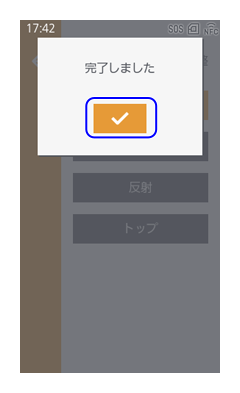

用紙センサの設定・調整
使用する用紙センサを変更する
［印字］ > ［センサタイプ］
- ［なし］
用紙センサを無効にします。 - ［透過］
ギャップタイプの用紙を使用する場合に選択します。透過タイプのセンサを使用します。 - ［透過2］
ギャップタイプの用紙を使用する場合に選択します。特に小さいサイズの用紙への印字位置精度を向上させたい場合に選択します。 - ［反射］
アイマークタイプの用紙を使用する場合に選択します。反射タイプのセンサを使用します。
* 初期値は、動作モードにより異なります。
［連続発行］、［ティアオフ］、［ハクリ］、［カッタ］、［印字中カット］：［透過］
CL4-SXR［ノンセパカッタ］：［反射］（RFIDモデルの場合）、［なし］（RFID非搭載モデルの場合）

- 使用しているモデルや［動作モード］、［高精度印字］の設定の組み合わせによって使用できる用紙センサが異なります。
- RFIDモデルの場合
- ［動作モード］が［ノンセパカッタ］以外：［透過］、［反射］
- CL4-SXR ［動作モード］が［ノンセパカッタ］：［反射］
- RFID非搭載モデルの場合
- ［動作モード］が［連続発行］／［ティアオフ］／［カッタ］：［なし］、［透過］、［透過2］*、［反射］
- ［動作モード］が［ハクリ］／［印字中カット］：［透過］、［透過2］*、［反射］
- CL4-SXR ［動作モード］が［ノンセパカッタ］：［なし］、［反射］
- RFIDモデルの場合
*：［透過2］は［高精度印字］が無効の場合に表示されます。
用紙センサの調整をおこなう
用紙センサの自動調整をおこなう
- 用紙をセットします。
用紙のラベルをはがして、台紙を用紙センサガイドの下に通します。
ジャーナル紙などの台紙がない用紙の場合は、用紙をそのままセットしてください。

- アイマーク（1）が用紙センサ位置（2）にかからないように台紙をセットしてください。
- アイマーク（1）が用紙頭出しセンサ（3）にかからないように台紙をセットしてください。
- 「カチッ」と音がするまで、サーマルヘッドを押し下げます。
- 設定画面から［印字］ > ［詳細設定］ > ［センサ調整］ > ［自動調整］をタップします。
- 調整するセンサを選択します。

- ［トップ］を選択すると、用紙頭出しセンサが調整されます。
- ［自動］を選択した場合、透過センサ（または透過2センサ）と反射センサの両方を調整します。用紙頭出しセンサの調整は含まれません。
- 使用しているセンサによって表示される選択肢は異なります。
- ノンセパカッタまたはハクリを使用している場合は、［トップ］は表示されません。
確認画面が表示されたら
 をタップします。
をタップします。
センサ調整が開始されます。センサ調整が完了したら、
をタップします。- 調整失敗のメッセージが表示された場合は、用紙を正しくセットしてやり直してください。
［トップ］を調整した場合は、 ボタンを押して、用紙が正常に送られることを確認します。
ボタンを押して、用紙が正常に送られることを確認します。 ボタンを押してオンライン状態に切替わるときに、用紙無駄なし機能により用紙が正しく印字開始位置に調整されることを確認します。
ボタンを押してオンライン状態に切替わるときに、用紙無駄なし機能により用紙が正しく印字開始位置に調整されることを確認します。- ［センサ自動調整］を実行しても用紙が正常に送られない場合は、販売店またはお客さまヘルプデスクにお問い合わせください。
用紙センサを手動で調整する
［印字］ > ［詳細設定］ > ［センサ調整］内の以下の項目で用紙センサの感度とスライスレベルを手動で調整できます。
- ［透過センサ］
- ［透過スライスレベル］
- ［透過2センサ］
- ［透過2スライスレベル］
- ［反射センサ］
- ［反射スライスレベル］
- 弊社カスタマーエンジニアが使用する項目です。通常はお客様が使用する必要はありません。
- 使用しているセンサによって表示される選択肢は異なります。
用紙センサの感度を調整する
まず、調整する用紙センサの「Low」レベルの値を算出します。
- 用紙を用紙センサガイドの下に通し、セットします。
［透過センサ］または［透過2センサ］を調整する場合は、用紙のラベルをはがして、台紙のみを用紙センサガイドの下に通します。
［反射センサ］を調整する場合は、ラベルをはがさずにセットしてください。
- アイマーク（1）が用紙センサ位置（2）にかからないように用紙をセットしてください。
- 「カチッ」と音がするまで、サーマルヘッドを押し下げます。
- 設定画面から［印字］ > ［詳細設定］ > ［センサ調整］をタップし、調整するセンサ（［透過センサ］/［透過2センサ］/［反射センサ］）をタップします。
- 「センサ」の値が0.5（V）未満になるまで［発光］の値を変更します。
［発光］の値はできるかぎり低く設定します。
初期値
［透過センサ］：124
［透過2センサ］：83
［反射センサ］：50 - ［発光］の値を変更しても「センサ」の値が0.5未満に減少しない場合は、［受光］の値を変更します。
初期値
［透過センサ］：116
［透過2センサ］：101
［反射センサ］：60 - 「センサ」の値をメモします。
これが「Low」レベルの値になります。
次に、調整する用紙センサの「High」レベルの値を算出します。
- ヘッドロックレバーを後方に倒してサーマルヘッドを開け、再度用紙をセットします。
ラベルはついたままにします。- ［透過センサ］/［透過2センサ］の場合は、アイマーク（1）が用紙センサ位置（2）にかからないようにセットしてください。
- ［反射センサ］の場合は、アイマーク（1）を用紙センサ位置（2）にかかるようにし、用紙センサが感知できるようにセットしてください。
- 「カチッ」と音がするまで、サーマルヘッドを押し下げます。
- 「センサ」の値を確認します。
値が、手順6でメモをしていた「Low」レベルの値よりも1.0（V）高ければ、これが「High」レベルの値になります。
「High」レベルと「Low」レベルの差が1.0未満の場合は、差が1.0より大きくなるよう、手順1から再度実行して［発光］と［受光］の値を調整します。 - 「センサ」の値が基準値の範囲内であれば、
 をタップし、値を確定します。
をタップし、値を確定します。- 「High」レベルと「Low」レベルの基準値は以下のとおりです。
- Low < 0.5（V）
- High - Low ≧ 1.0（V）
- 「High」レベルと「Low」レベルの基準値は以下のとおりです。
用紙センサのスライスレベルを調整する
- 設定画面から［印字］ > ［詳細設定］ > ［センサ調整］をタップし、調整するスライスレベル（［透過スライスレベル］/［透過2スライスレベル］/［反射スライスレベル］）をタップします。
- 以下の式でスライスレベルの値を算出し、［スライスレベル］に設定します。
透過スライスレベル、透過2スライスレベル=（Highレベル - Lowレベル） x 0.3 + Lowレベル
反射スライスレベル=Highレベル - Lowレベル） x 0.7 + Lowレベル
初期値：0.0 - をタップし、値を確定します。
- ［スライスレベル］を0.0（V）に設定した場合、スライスレベルは本製品で自動的に設定されます。
［印字］ > ［詳細設定］ > ［ペーパーエンド］ > ［センサタイプ］
- ［反射］
アイマークセンサ（反射センサ）を使用して、ペーパーエンドを検知します。 - ［透過］
ギャップセンサ（透過センサ）を使用して、ペーパーエンドを検知します。